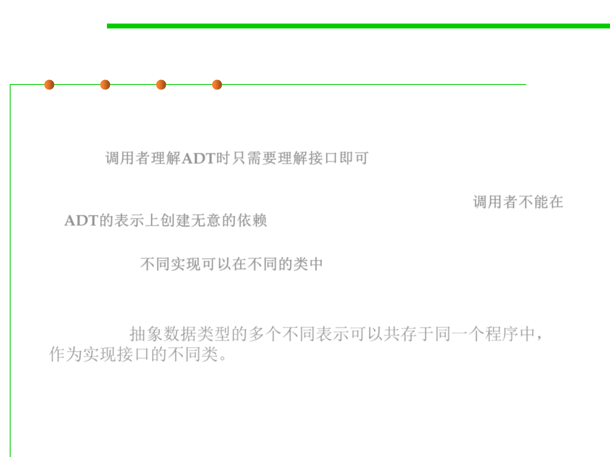

Advantages of interface
3.4 Object-Oriented Programming (OOP)
▪ Interface specifies the contract for the client and nothing more.
– The interface is all a client programmer needs to read to understand the
ADT. 调用者理解ADT时只需要理解接口即可
– The client can’t create inadvertent dependencies on the ADT’s rep,
because instance variables can’t be put in an interface at all. 调用者不能在
ADT的表示上创建无意的依赖
– The implementation is kept well and truly separated, in a different class
altogether. 不同实现可以在不同的类中
▪ Multiple different representations of the abstract data type can co-
exist in the same program, as different classes implementing the
interface. 抽象数据类型的多个不同表示可以共存于同一个程序中，
作为实现接口的不同类。
– When an abstract data type is represented just as a single class, without an
interface, it’s harder to have multiple representations.